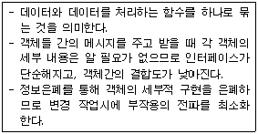
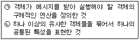
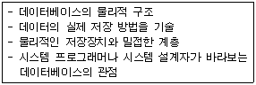
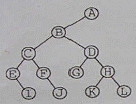
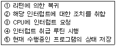
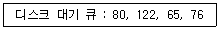
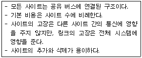
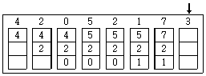
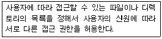
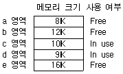

전자계산기조직응용기사 (2007-03-04 기출문제)
1과목: 전자계산기 프로그래밍
1. 세그먼트 레지스터에 각 세그먼트의 시작 번지를 할당하여 현재의 세그먼트가 어느 것인가를 지적하게 하는 어셈블리 명령은?
- EXTERN
- PUBLIC
- ASSUME
- EJECT
(정답률: 70%)

2. 매크로 프로세서의 기본 수행 작업이 아닌 것은?
- 매크로 정의 인식
- 매크로 호출 인식
- 매크로 정의 저장
- 매크로 호출 저장
(정답률: 86%)
3. C 언어에서 논리 합(OR)을 나타내는 논리 연산자는?
- >
- !
- &&
- ||
(정답률: 75%)
4. 어셈블리에서 어떤 기호적 이름에 상수 값을 할당하는 명령은?
- EQU
- PTR
- MOV
- LEA
(정답률: 94%)
5. PLC에 관한 설명으로 가장 거리가 먼 것은?
- PLC는 전원 투입과 동시에 각종 메모리와 입?출력부의 체크가 행해지는 것이 일반적이다.
- 입력기기를 접속할 때 그 접점이 OFF 상태로 되어 있어도 접점보호소자로 인해 미세한 누설전류가 발생될 수 있다.
- 입력모듈에는 노이즈에 의한 오동작 방지를 위해 필터회로가 들어가 있고 이로 인해 응답 시간이 단축된다.
- PLC의 출력부는 출력기기 동작시 필요한 전압레벨 변환과 전력증폭을 행하는 역할도 한다.
(정답률: 85%)
6. 객체 지향 기법에서 다음은 무엇에 관한 설명인가?

- 상속성
- 조합성
- 캡슐화
- 다형성
(정답률: 100%)
7. 어셈블리어에서 라이브러리에 기억된 내용을 프로시저로 정의하여 서브루틴으로 사용하는 것과 같이 사용할 수 있도록 그 내용을 현재의 프로그램 내에 포함시켜 주는 명령은?
- TITLE
- EVEN
- INCLUDE
- ORG
(정답률: 90%)
8. 어셈블리에서 서브루틴을 호출하는 명령은?
- LOOP
- JMP
- CALL
- LOOPE
(정답률: 95%)
9. 프로그램 내에서 양쪽 오퍼랜드에 기억된 내용을 바꾸어야 할 때 사용하는 어셈블리 명령은?
- XCHG
- EJECT
- ING
- DEC
(정답률: 75%)
10. C 언어에 대한 설명으로 옳지 않은 것은?
- 이식성이 높은 편이다.
- 시스템 프로그래밍 언어로 적합하다
- 인터프리터 기법을 사용한다.
- 많은 데이터형과 풍부한 연산자를 가지고 있다.
(정답률: 93%)
11. BNF를 이용하여 그 대상을 근(root)로 하고, 단말 노드들을 왼쪽에서 오른쪽으로 나열하여 작성하는 트리로서, 작성된 표현식이 BNF의 정의에 의해 바르게 작성 되었는지를 확인하기 위해 만든 트리를 무엇이라고 하는가?
- 구조 트리
- 분석 트리
- 파스 트리
- 구문 트리
(정답률: 89%)
12. 프로그램에서 함수를 호출하는 부분과 실제로 이러한 함수 호출에 의하여 실행되는 명령어들을 연결하는 작업 또는 프로그램에서 사용되는 변수와 이러한 변수 이름에 의하여 접근되는 기억 장소 위치를 연결하는 작업을 무엇이라고 하는가?
- comment
- loading
- binding
- paging
(정답률: 58%)
13. C 언어에서 표준 입력인 키보드로부터 문자열을 지정된 양식에 딸 읽어 변수 값을 문자열로 변환시켜 주는 함수는 무엇인가?
- getchar()
- putchar()
- scanf()
- printf()
(정답률: 72%)
14. PLC 설치시 주의사항으로 옳지 않은 것은?
- 먼지, 염분, 부식성 가스, 인화성 가스가 없는 곳에 설치한다.
- 진동이나 충격이 가해지지 않는 곳에 설치한다.
- 가급적 발열체 부근에 설치한다.
- 급격한 온도 변화로 인하여 이슬이 맺히지 않는 곳에 설치한다.
(정답률: 89%)
15. 종래에 사용하던 제어반 내의 릴레이 타이머, 카운터 등의 기능을 IC, 트랜지스터 등의 반도체 소자로 대체시켜 기본적인 시퀀스 제어 기능에 수치 연산 기능을 추가하여 프로그램 제어가 가능하도록 한 자율성이 높은 제어 장치는?
- PAC
- PL/1
- PLC
- PRG
(정답률: 91%)
16. 단항 연산자에 해당하는 것은?
- AND
- XOR
- OR
- NOT
(정답률: 94%)
17. C 언어에서 printf문 사용시 데이터 형식을 규정하는 변환문자에 대한 설명이 옳지 않은 것은?
- %s : 부호 없는 10진 정수
- %d : 10진 정수
- %x : 16진 정수
- %e : 지수형
(정답률: 100%)
18. C 언어의 기억 클래스 종류가 아닌 것은?
- 내부 변수(internal variable)
- 자동 변수(automatic variable)
- 레지스터 변수(register variable)
- 정적 변수(static variable)
(정답률: 100%)
19. 객체 지향 개념에서 다음 각 설명에 해당하는 내용을 옳게 짝지은 것은?

- (ㄱ) 클래스 (ㄴ) 실체
- (ㄱ) 메소드 (ㄴ) 메시지
- (ㄱ) 메소드 (ㄴ) 클래스
- (ㄱ) 실체 (ㄴ) 메시지
(정답률: 95%)
20. C 언어에서 문자형 자료 선언시 사용하는 것은?
- int
- char
- float
- double
(정답률: 84%)
2과목: 자료구조 및 데이터통신
21. 정보의 전송제어 절차의 단계를 올바르게 나타낸 것은?
- 회선접속 → 데이터링크의 확립 → 데이터 전송 → 데이터링크의 해제 통보 → 회선절단
- 회선접속 → 데이터 전송 → 데이터링크의 확립 → 데이터링크의 해제 통보 → 회선절단
- 회선접속 → 데이터링크의 확립 → 데이터링크의 해제 통보 → 데이터 전송 → 회선절단
- 회선접속 → 데이터링크의 확립 → 데이터 전송 → 회선절단 → 데이터링크의 해제 통보
(정답률: 78%)
22. 패킷 네트워크 인터페이스에 대한 ITU-T 표준안 X.25는 무엇을 정의한 것인가?
- 경로 설정 알고리즘 정의
- 동기식 1200bps 변?복조기 정의
- 전용 회선을 위한 4800bps 변?복조기 정의
- 사용자 장치(DTE)와 패킷 네트워크 노드(DCE)간의 데이터 교환 절차 정의
(정답률: 84%)
23. 다음 중 종점간에 오류 수정과 흐름 제어를 수행하여 신뢰성있고 투명한 데이터 전송을 제공하는 것은 OSI 7계층 중 어느 계층인가?
- 물리 계층
- 표현 계층
- 네트워크 계층
- 트랜스포트 계층
(정답률: 77%)
24. 주파수 분할 다중화에 대한 설명 중 옳지 않은 것은?
- 동기식과 비동기식 다중화 방식이 있다.
- 다중화하고자 하는 각 채널의 신호는 각기 다른 반송주파수로 변조된다.
- 부채널간의 상호 간섭을 방지하기 위해 가드 밴드(guard band)를 주어야 한다.
- 전송 매체에서 사용 가능한 주파수 대역이 전송하고자하는 각 터미널의 신호대역보다 넓은 경우에 적용된다.
(정답률: 67%)
25. 8진 PSK 변조 방식에서 변조속도가 2400[Baud]일 때 정보신호의 전송속도는 몇 bps 인가?
- 2400
- 4800
- 7200
- 9600
(정답률: 95%)
26. 전용회선방식에 대한 설명으로 틀린 것은?
- 주로 이용빈도가 적고 패킷회선에 적합하다.
- 교환접속이 아니라 고정접속이다.
- 신속한 접속이 가능하다.
- 공중통신망의 일부를 임대하여 전용망으로 사용할 수 있다.
(정답률: 82%)
27. 망(network) 구조의 기본 유형이 아닌 것은?
- 스타형
- 링형
- 트리형
- 십자형
(정답률: 87%)
28. 데이터 통신망에서 사용되는 일반적인 전송속도 단위로 1초간에 운반할 수 있는 데이터의 비트 수를 무엇이라고 하는가?
- bps
- band
- byte
- throughput
(정답률: 86%)
29. 전진 에러 수정(FEC:Forward Error Correction) 방식에서 에러를 수정하기 위해 사용하는 방식은?
- 해밍코드(Hamming Code)방식
- 압축(Compression)방식
- 패러티 비트(Parity Bit)방식
- 허프만 코딩(Huffman Coding)방식
(정답률: 62%)
30. 한 개의 프레임을 전송하고, 수신측으로부터 ACK 및 NAK 신호를 수신할 때까지 정보 전송을 중지하고 기다리는 ARQ(automatic repeat request) 방식은?
- CRC 방식
- Go-back-N 방식
- Stop-and-wait 방식
- Selective repeat 방식
(정답률: 82%)
31. 트랜잭션의 특성으로 거리가 먼 것은?
- Atomicity(원자성)
- Integrity(무결성)
- Consistency(일관성)
- Durability(영속성)
(정답률: 63%)
32. 데이터베이스 설계단계로 옳은 것은?
- 요구조건분석 → 논리설계 → 개념설계 → 물리설계
- 요구조건분석 → 개념설계 → 논리설계 → 물리설계
- 개념설계 → 요구조건분석 → 물리설계 → 논리설계
- 개념설계 → 요구조건분석 → 논리설계 → 물리설계
(정답률: 87%)
33. 데이터베이스의 3계층 스키마 중 다음은 무엇에 대한 설명인가?

- 시스템 스키마(System Schema)
- 외부 스키마(External Schema)
- 개념 스키마(Conceptual Schema)
- 내부 스키마(Internal Schema)
(정답률: 75%)
34. 데이터베이스 시스템의 데이터 언어 중 사용할 데이터베이스의 정의 및 변경을 위해서 사용하는 언어는?
- DBL(Data backup language)
- DCL(Data control language)
- DDL(Data definition language)
- DML(Data manipulation language)
(정답률: 91%)
35. 스택의 사용 예가 아닌 것은?
- 서브루틴 호출
- 인터럽트 처리
- 운영체제의 작업스케줄링
- 수식 계산 및 수식 표기법
(정답률: 79%)
36. 선형 구조가 아닌 것은?
- 트리
- 스택
- 큐
- 데크
(정답률: 80%)
37. 다음 트리를 후위 순회(Post-order) 방법으로 운행한 결과는?

- EICFJBGDKHLA
- ABCEIFJDGHKL
- IEJFCGKLHDBA
- ABCDEFGHIJKL
(정답률: 88%)
38. 파일의 여러 가지 편성법 중 해싱을 이용한 파일 구조는?
- 순차파일(SAM)
- 가상순차 파일(VSAM)
- 직접 파일(DAM)
- 색인 순차 파일(ISAM)
(정답률: 79%)
39. 해싱에서 서로 다른 두 개의 키 값이 같은 해시(hash)주소를 갖는 현상을 무엇이라고 하는가?
- Mid-square
- Chaining
- parsing
- Collision
(정답률: 80%)
40. DBMS의 필수 기능에 해당하지 않는 것은?
- 관리기능
- 정의기능
- 조작기능
- 제어기능
(정답률: 79%)
3과목: 전자계산기구조
41. 인터프리터(interpreter)를 사용하는 언어는?
- BASIC
- FORTRAN
- PASCAL
- Machine Code
(정답률: 58%)
42. 데이터 처리 명령어에 해당되지 않는 것은?
- 전송 명령어
- 로테이트 명령어
- 논리 명령어
- 산술 명령어
(정답률: 58%)
43. CAM(Content Addressable Memory)의 특징으로 가장 옳은 것은?
- 값이 싸다.
- 구조 및 동작이 간단하다.
- 명령어를 순서대로 기억시킨다.
- 저장된 내용의 일부를 이용하여 정보의 위치를 검색한다.
(정답률: 93%)
44. 미소의 콘덴서에 전하를 충전하는 형태의 원리를 이용하는 메모리로, 재충전(Refresh)이 필요한 메모리는?
- SRAM
- DRAM
- PROM
- EPROM
(정답률: 91%)
45. 다음 중 캐시(cache) 기억장치에 대한 설명으로 가장 옳은 것은?
- 중앙처리장치와 주기억장치 간의 정보교환을 위해 임시 보관하는 장치이다.
- 중앙처리장치의 속도와 주기억장치의 속도를 가능한 같도록 하기 위한 장치이다.
- 캐시와 주기억장치 사이에 정보교환을 위하여 임시 저장하는 장치이다.
- 캐시와 주기억장치의 속도를 같도록 하기 위한 장치이다.
(정답률: 80%)
46. 다음 중 랜덤(random) 처리가 되지 않는 기억장치는?
- 자기 드럼
- 자기 디스크
- 자기 테이프
- 자기 코어
(정답률: 82%)
47. 인터럽트 작동 순서가 올바른 것은?

- ③→⑤→④→②→①
- ④→③→⑤→②→①
- ⑤→②→③→①→④
- ①→③→④→⑤→②
(정답률: 85%)
48. 다음 parallel process 중 pipeline process와 가장 관계가 깊은 것은?
- SISD(Single Instruction Single Data)
- MISD(Multi Instruction Single Data)
- SIMD(Single Instruction Multi Data)
- MIMD(Multi Instruction Multi Data)
(정답률: 25%)
49. 마이크로 사이클에 대한 설명으로 옳지 않은 것은?
- 마이크로 오퍼레이션 수행에 필요한 시간을 마이크로 사이클 타임이라 한다.
- 마이크로 오퍼레이션 중에서 수행 시간이 가장 긴 것을 정의한 방식이 동기 고정식이다.
- 마이크로 오퍼레이션에 따라서 수행 시간을 다르게 하는 것을 동기 가변식이라 한다.
- 모든 마이크로 오퍼레이션들의 수행시간이 유사한 경우에 유리한 방식은 동기 가변식이다.
(정답률: 45%)
50. CPU에 메이저 상태(Major state)로 볼 수 없는 것은?
- Fetch
- Indirect
- Execute
- Direct
(정답률: 62%)
51. 컴퓨터의 제어 장치에 일반적으로 포함되지 않는 것은?
- 해독기
- 순서기
- 주기억장치
- 주소 처리기
(정답률: 54%)
52. 다음 중 DMA에 대한 설명으로 옳지 않은 것은?
- DMA는 Direct Memory Access의 약자이다.
- DMA는 기억장치와 주변장치 사이의 직접적인 데이터 전송을 제공한다.
- DMA는 블록으로 대용량의 데이터를 전송할 수 있다.
- DMA는 입 ? 출력 전송에 따른 CPU의 부하를 증가시킬 수 있다.
(정답률: 82%)
53. 다음 중 interrupt 발생 원인이 아닌 것은?
- 정전
- Operator의 의도적인 조작
- 임의의 부프로그램에 대한 호출
- 기억공간 내 허용되지 않는 곳에의 접근 시도
(정답률: 59%)
54. 인터럽트를 발생하는 모든 장치들을 인터럽트의 우선순위에 따라 직렬로 연결함으로써 이루어지는 우선순위 인터럽트 처리방법은?
- handshaking
- daisy-chain
- DMA
- polling
(정답률: 67%)
55. 명령문의 구성 형태 중 하나의 오퍼랜드가 누산기에 포함된 명령어 형식은?
- 0-주소 명령어
- 1-주소 명령어
- 2-주소 명령어
- 3-주소 명령어
(정답률: 72%)
56. 부동 소수점 수(floating point number)에서 음수를 나타내는 방법을 가장 잘 설명한 것은?
- 가수의 부호가 (+)이면 1, (-)이면 0으로 나타낸다.
- 지수는 부호에 관계없이 bias 값에 더한다.
- 지수의 부호가 (-)이면 2의 보수로 나타낸다.
- 지수의 부호가 (-)이면 1의 보수로 나타낸다.
(정답률: 40%)
57. 데이터 처리 명령어 중 SHL은 누산기의 내용을 좌측으로 1bit 이동하는 명령어이다. 이와 같은 명령어의 주소지정방식은?
- 직접 주소지정방식
- 간접 주소지정방식
- 묵시적 주소지정방식
- 레지스터 주소지정방식
(정답률: 57%)
58. 다음 중 2의 보수(2‘s complement) 가산 회로로서 정수 곱셈을 이행할 경우 필요 없는 것은?
- shift
- add
- complement
- normalize
(정답률: 58%)
59. 사용자가 한번만 내용을 기입할 수 있으나, 지울 수 없는 것은?
- RAM
- PROM
- EPROM
- EEPROM
(정답률: 63%)
60. 중앙처리장치의 기억 모듈에 중복적인 데이터 접근을 방지하기 위해서 연속된 데이터 또는 명령어들을 기억 장치모듈에 순차적으로 번갈아 가면서 처리하는 방식은?
- 복수 모듈
- 인터리빙
- 멀티플렉서
- 셀렉터
(정답률: 90%)
4과목: 운영체제
61. SSTF 방식을 사용할 경우 현재 헤드가 53 에 있다고 가정하면, 디스크 대기 큐에 다음과 같은 순서(왼쪽부터 먼저 도착한 순서임)의 액세스 요청이 대기 중일 때, 가장 먼저 실행되는 것은?

- 80
- 122
- 65
- 76
(정답률: 77%)
62. 분산 운영체제의 구조 중 다음 설명에 해당하는 것은?

- Multi-access Bus Connection
- Hierarchy Connection
- Star Connection
- Ring Connection
(정답률: 50%)
63. 다음 중 공간 구역성(Spatial locality)과 밀접한 관계가 있는 것은?
- 스택(stack)
- 순환(looping)
- 배열 순례(array traversal)
- 부 프로그램(subprogram)
(정답률: 77%)
64. 유닉스의 I-node 에 포함되는 내용이 아닌 것은?
- 파일이 최초로 수정된 시간
- 파일 소유자의 사용자 식별
- 파일의 크기
- 파일의 링크 수
(정답률: 79%)
65. 다중 프로그래밍 작성의 환경에서 어떤 프로그램의 실행을 중단하고 다른 프로그램의 실행을 재개할 때, 그 프로그램의 재개에 필요한 환경을 다시 설정하는 것을 의미하며, 운영체제에서 overhead 의 큰 요인 중 하나로 작용하는 것은?
- Context Switching
- Monitor
- Semaphore
- Dispatching
(정답률: 60%)
66. 유닉스에서 기존 파일 시스템에 새로운 파일 시스템을 서브 디렉토리에 연결할 때 사용하는 명령은?
- mount
- mkfs
- fsck
- mknod
(정답률: 72%)
67. 실행 중인 프로세스가 일정 시간 동안 자주 참조하는 페이지의 집합을 무엇이라고 하는가?
- Working Set
- Locality
- Thrashing
- Prepaging
(정답률: 78%)
68. 파일의 구성 방식 중 순차 파일에 대한 설명으로 옳지 않은 것은?
- 부가적인 정보를 보관하지 않으므로 불필요한 공간 낭비가 없다.
- 파일 구성이 용이하다.
- 대화식 처리보다 일괄 처리에 적합한 구조이다.
- 임의의 특정 레코드를 검색하는 효율이 높다.
(정답률: 75%)
69. 운영체제의 설명으로 옳지 않은 것은?
- 운영체제는 컴퓨터 사용자와 컴퓨터 하드웨어간의 인터페이스로서 동작하는 일종의 하드웨어 장치다.
- 운영체제는 컴퓨터를 편리하게 사용하고 컴퓨터 하드웨어를 효율적으로 사용할 수 있도록 한다.
- 운영체제의 성능평가 요소에는 처리 능력, 반환 시간, 사용 가능도, 신뢰도 등이 있다.
- 운영체제는 프로세서, 메모리, 주변장치, 파일 등을 관리한다.
(정답률: 63%)
70. 파일 시스템에 대한 설명으로 옳지 않은 것은?
- 고급 언어에 대한 번역 기능을 제공한다.
- 사용자가 파일을 생성, 수정, 제거할 수 있도록 한다.
- 파일 공유를 위해서 여러 종류의 접근 제어 기법을 제공한다.
- 불의의 사태에 대비한 예비(backup)와 복구(recovery)능력을 갖추어야 한다.
(정답률: 71%)
71. 매크로 프로세서가 수행해야 하는 기본적인 기능에 해당하지 않는 것은?
- 매크로 정의 확장
- 매크로 호줄 인식
- 매크로 정의 인식
- 매크로 정의 저장
(정답률: 62%)
72. SJF 방법의 단점을 보완하여 개발한 것으로, 프로그램의 처리 순서는 그 실행(서비스) 시간의 길이뿐만 아니라 대기 시간에 따라 결정되는 스케줄링 방식은?
- SRT
- HRN
- MFQ
- RR
(정답률: 50%)
73. 프로세스의 정의로 거리가 먼 것은?
- 프로시저가 활동 중인 것
- 동기적 행위를 일으키는 주체
- PCB를 가진 프로그램
- 실행 중인 프로그램
(정답률: 89%)
74. 유닉스에서 파일 내용을 화면에 표시하는 명령과 파일의 보호 모드를 성정하여 파일의 사용 허가를 지정하는 명령을 순서적으로 옳게 나열한 것은?
- cp, rm
- open, chown
- cat, chmod
- type, mkdir
(정답률: 93%)
75. LRU 교체 기법에서 페이지 프레임이 3일 경우 페이지 호출 순서가 3인 곳(화살표 부분)의 빈칸을 위에서부터 아래쪽으로 옳게 나열한 것은?

- 3, 2, 1
- 7, 3, 1
- 7, 2, 3
- 5, 2, 3
(정답률: 63%)
76. 파일 보호 기법 중 다음 설명에 해당하는 것은?

- Crytography
- Password
- Naming
- Access control
(정답률: 80%)
77. 메모리 관리 기법 중 Worst fit 방법을 사용할 경우 9K가 요구되는 프로그램 실행을 위해 어느 부분이 할당되는가?

- a 영역
- b 영역
- c 영역과 d 영역
- e 영역
(정답률: 69%)
78. 분산 처리 시스템의 설명으로 적합하지 않은 것은?
- 신뢰도 향상
- 자원 공유
- 연산 속도 향상
- 보안성 향상
(정답률: 87%)
79. 선점(preemptive) 기법의 스케줄링에 해당하는 것은?
- FIFO
- SJF
- HRN
- RR
(정답률: 34%)
80. 파일 구성 방식 중 ISAM(Indexed Sequential Access - Method)의 물리적인 색인 구성은 디스크의 물리적 특성에 따라 색인(index)을 구성하는데, 다음 중 3단계 색인에 해당되지 않는 것은?
- 실린더 색인(cylinder index)
- 트랙 색인(track index)
- 마스터 색인(master index)
- 볼륨 색인(volume index)
(정답률: 59%)
5과목: 마이크로 전자계산기
81. 다음 중 인터럽트(interrupt)에 대한 설명으로 옳지 않은 것은?
- 인터럽트는 기계적 고장이나 프로그램 수행 중 잘못된 데이터 등에 의해서 발생된다.
- 입?출력시 인터럽트의 필요성은 중앙처리장치와 주변장치의 속도 차이 때문이다.
- 입?출력 인터럽트를 사용하면 하드웨어(hardware)의 운영이 비효율적이다.
- 인터럽트 취급 루틴에서 반드시 사용하는 레지스터는 PC(program counter)이다.
(정답률: 67%)
82. 프로그램들을 기억 장치에 넣고 실행할 수 있도록 준비하는 프로그램은?
- 링커(linker)
- 로더(loader)
- 어셈블러(assembler)
- 번역기(translator)
(정답률: 93%)
83. 언어 처리용 소프트웨어가 아닌 것은?
- compiler
- assembler
- interpreter
- device driver
(정답률: 84%)
84. 인스트럭션 안에 데이터 값이 포함되어 있는 주소지정 방식은?
- 직접 주소
- 간접 주소
- 상대 주소
- 즉시 주소
(정답률: 46%)
85. 다음 중 보조기억 매체 중에서 가장 빠르게 자료를 입력할 수 있는 것은?
- 플로피 디스크
- 카세트형 자기 테이프
- 하드 디스크
- 페이퍼 테이프
(정답률: 86%)
86. 마이크로컴퓨터의 CPU 역할이 아닌 것은?
- 인터럽트 요구에 대한 처리를 한다.
- 기억 소자와 데이터를 주고 받는다.
- 명령어를 fetch, execute 한다.
- 프로그램을 저장한다.
(정답률: 72%)
87. 운영체제(operating system)의 설명 중 가장 옳은 것은?
- 신속한 처리를 위해 응답시간이 길수록 좋다.
- 오퍼레이터(operator)의 조작 기능을 강화한 시스템이다.
- 프로그램 개발 및 관리를 효율적으로 지원하는 자동 검증(auto test) 시스템이다.
- 시스템의 운영 효율을 놓이고, 사용자가 편리하게 이용하기 위해 제공되는 시스템이다.
(정답률: 65%)
88. 스택의 작동을 포함하는 명령어의 번지지정 방식은?
- immediate addressing
- relative addressing
- implied addressing
- indexed addressing
(정답률: 15%)
89. PLA의 프로그래밍에 대한 설명으로 옳은 것은?
- AND와 OR 배열 모두를 프로그래밍 할 수 있다.
- AND 배열만 프로그래밍 한다.
- OR 배열만 프로그래밍 한다.
- 프로그래밍을 할 필요가 없다.
(정답률: 70%)
90. 스택(stack)과 관련이 없는 명령어는?
- CALL
- POP
- PUSH
- MOVE
(정답률: 80%)
91. 마이크로프로세서의 처리 능력(performance)과 가장 관계가 적은 것은?
- clock의 주파수
- data bus width
- addressing mode
- software의 호환성
(정답률: 85%)
92. 다음 중 assembler에 대한 설명으로 옳은 것은?
- BASIC program을 source program으로 변환하는 장치이다.
- source program을 BASIC program으로 변환하는 program이다.
- machine language program을 BASIC program으로 변환하는 장치이다.
- source program을 machine language program으로 변환하는 program이다.
(정답률: 94%)
93. 평균 접근시간(access time)이 가장 긴 보조기억 장치는?
- 자기디스크
- 자기테이프
- 자기드럼
- 플로피 디스크
(정답률: 75%)
94. CPU가 무엇을 하고 있는가를 나타내는 상태를 무엇이라 하는가?
- fetch state
- major state
- stable state
- unstable state
(정답률: 89%)
95. memory-mapped-I/O 와 I/O-mapped-I/O 에 대한 설명 중 틀린 것은?
- I/O-mapped-I/O에서는 입?출력을 가리키는 두개의 제어신호가 필요하다.
- I/O-mapped-I/O에서는 memory와 I/O 주소 공간을 공유한다.
- memory-mapped-I/O 에서는 I/O장치를 호출하는데 메모리형 명령어를 사용한다.
- memory-mapped-I/O 에서는 memory location의 감소를 초래 할 수 있다.
(정답률: 73%)
96. 인스트럭션 레지스터의 내용은 무엇을 통해 제어회로에 전달 되는가?
- Memory Buffer Register
- Memory Address Register
- encoder
- decoder
(정답률: 42%)
97. CPU가 시스템 버스를 사용하지 않는 시간을 이용하여 DMA 기능을 수행하는 방식을 무엇이라 하는가?
- burst 방식
- cycle stealing 방식
- paging 방식
- interrupt 방식
(정답률: 74%)
98. 중앙처리장치의 하드웨어(hardware) 요소들을 기능별로 나눌 때 속하지 않는 기능은?
- 입력 기능
- 기억 기능
- 연산 기능
- 제어 기능
(정답률: 72%)
99. 50개의 입?출력 외부 장치를 주소지정 하려고 한다. 몇 개의 어드레스 선이 필요한가?
- 4개
- 5개
- 6개
- 7개
(정답률: 86%)
100. 다음 중 제어 데이터(control data)를 기억시키기에 가장 적합한 기억장치는?
- RAM
- ROM
- DRAM
- SRAM
(정답률: 84%)
"ASSUME" 명령은 세그먼트 레지스터에 각 세그먼트의 시작 번지를 할당하여 현재의 세그먼트가 어느 것인가를 지적하게 합니다. 이는 프로그램이 실행될 때 메모리 상에서 어떤 데이터나 코드가 어느 세그먼트에 위치하는지를 명확히 하기 위해 사용됩니다.
"EXTERN" 명령은 다른 모듈에서 선언된 변수나 함수를 참조할 때 사용되며, "PUBLIC" 명령은 현재 모듈에서 선언된 변수나 함수를 다른 모듈에서 참조할 수 있도록 하는데 사용됩니다.
"EJECT" 명령은 프린터 출력을 제어하는 명령으로, 이 문제와는 관련이 없습니다.